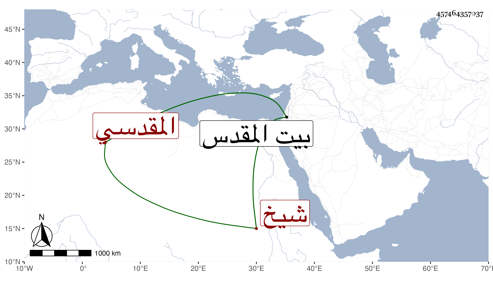

0902Sakhawi.DawLamic.ITO20230111-ara1.EIS1600.457464357037
Biography ID: 457464357037
56
أحمد بن علي بن خليل شهاب الدين المقدسي صهر التقي أبي بكر القلقشندي المقدسي على ابنته وسبط الجمال عبد الله بن جماعة شيخ الصلاحية ويعرف بابن اللدي . ولد سنة خمس وعشرين وثمانمائة ببيت المقدس وحفظ العمدة والمنهاج والألفيتين وغيرها وسمع على جده لأمه وصهره وابن أخيه أبي حامد أحمد بن عبد الرحيم والسراج الحمصي بل وعائشة الكنانية في آخرين من أهل بلده والواردين عليه ، وهو ممن سمع معي كثيرا مما قرأته هناك وكان عارفا بلقاء الأكابر بمروءة وتودد وكرم . مات في رمضان سنة ثمانين ببيت المقدس ودفن بتربة ماملا عند القلقشندي رحمه الله وعفا عنه .
